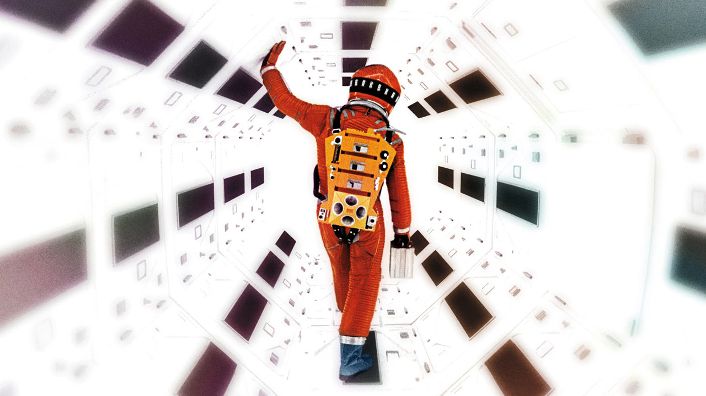
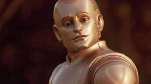
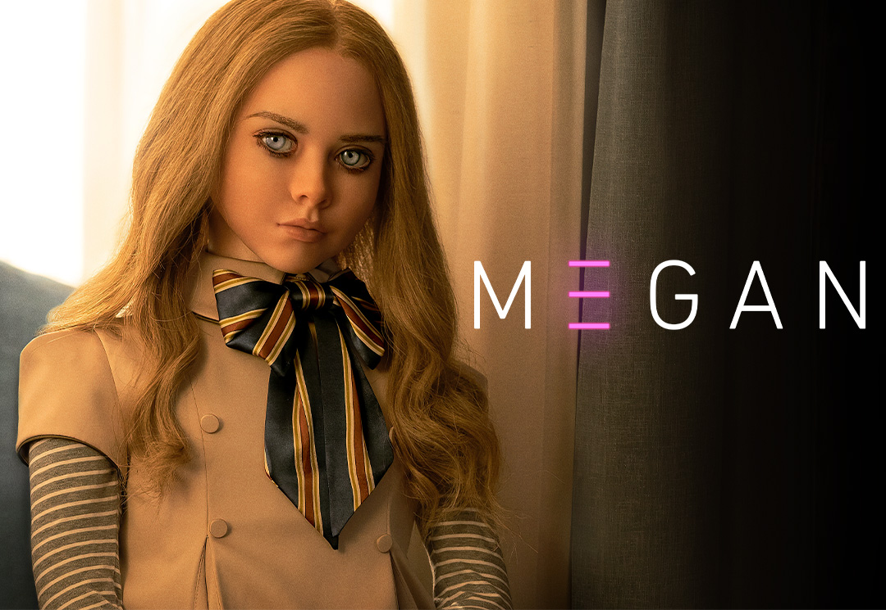

L’intelligenza artificiale è stata rappresentata nei film talvolta come un’alleata, altre volte come una minaccia per il genere umano. L’evoluzione ha influenzato la percezione sociale di questo tipo di tecnologia e, talvolta, ha anche spinto al progresso. L’intelligenza artificiale, negli ultimi decenni, è stata protagonista e antagonista di numerosi film più o meno realistici, che l’hanno dipinta in svariati modi: ottimisticamente così come con preoccupazione e riserve. Ciò che in passato era fantascientifico rappresenta ora un possibile o probabile sviluppo della nostra società e delle tecnologie che tutti noi abbiamo imparato a conoscere, nella nostra vita personale tanto quanto sul luogo di lavoro.
L’AI è stata rappresentata nei film in diversi modi e la sua evoluzione è molto particolare.
Quella che da molti viene ritenuta la prima rappresentazione cinematografica dell’intelligenza artificiale risale infatti al 1927, con il film muto “Metropolis”, diretto da Fritz Lang . Il film, ambientato nel 2026 – a cento anni dalla sua produzione – nella megalopoli Metropolis, vede per la prima volta la comparsa di androidi dalle sembianze umane. Maria-robot, esteticamente uguale alla vera Maria (umana), riesce a confondere chi si rapporta con lei, ma, essendo stata programmata dal professor Rotwang al solo scopo di portare gli operai alla ribellione, la sua capacità “cognitiva” risulta limitata.
Poi, con “Ultimatum alla Terra” – film del 1951 diretto da Robert Wise – si notano i primi tentativi di una rappresentazione della robotica e dell’intelligenza artificiale. Il robot Gort e l’esercito di automi presenti nella pellicola portano infatti a intravedere un mondo in cui delle macchine autonome e in grado di “pensare” potrebbero assoggettare l’umanità. La diffidenza degli umani nei confronti di questi risulta molto attuale.
Successivamente, nel film del 1968 “2001 Odissea nello Spazio” diretto da Stanley Kubrick appare il supercomputer intelligente HAL9000, dotato di computer vision, capacità di comprensione del linguaggio naturale (anche attraverso la lettura del labiale) e persino di sentimenti. Una rappresentazione che, seppur datata, mostra una certa visione al futuro, in parte già realizzatasi.

Anche “Westworld” (1973) tratta classicamente il tema dell’intelligenza artificiale, rappresentando in parte la paura relativa alla possibilità che le macchine possano avere il sopravvento, ma in questo film è presente un ulteriore elemento: l’interazione emotiva tra robot e esseri umani. Nel film “Blade Runner”, uscito nello stesso anno, e i cyborg popolano la visione del film “Terminator” (1984).
Sarà poi “Corto Circuito” (1986) a rappresentare un robot capace di passare da uno stadio di intelligenza artificiale ristretta a uno di super intelligenza attraverso un processo di autoapprendimento. Un’evoluzione che si accompagna a un messaggio interessante: l’intelligenza artificiale e i robot sono uno strumento tecnologico di per sé neutro, che può risultare positivo o negativo a seconda delle intenzioni dei loro creatori umani.
“Ghost in the Shell”, manga (1989) e film d’animazione giapponese (1995), divenuto poi un film d’azione nel 2017, rappresenta inoltre androidi, cyborg e una super intelligenza artificiale auto-cosciente. Altri film degni di nota: Matrix (1999) rappresenta una super intelligenza artificiale che tiene in ostaggio l’umanità e in cui si ritorna ad affrontare il tema etico degli effetti dell’AI sugli esseri umani; altro film è “L’uomo bicentenario” (1999) Il film L’Uomo bicentenario è stato diretto da Chris Columbus e tratto dal romanzo di Isaac Asimov. Nell’aprile del 2005 Richard Martin porta a casa il robot positronico NDR-114 con l’idea di sfruttarlo per svolgere le mansioni domestiche. La figlia più piccola del dottore Amanda gli dà il nome Andrew (il quale ricambia l’affetto chiamando Amanda “piccola Miss”). Il padre Richard, intuendo alcune potenzialità del robot, lo educa ad esprimere la propria creatività e gli insegna a riconoscere mentalità, comportamenti, atteggiamenti e sentimenti tipici umani.

“AI "Intelligenza Artificiale” (2001), film dal titolo molto chiaro e in cui si tratta di robot umanoidi in grado di provare emozioni; “Minority Report” (2002), include poi il tema delle indagini predittive tramite AI, oggi (quasi) realtà; “Io, Robot” (2004), che conduce il pubblico a porsi domande sulla linea di demarcazione tra robot ed esseri umani; “Guida galattica per autostoppisti” (2005), in cui robot e software AI coesistono e si rapportano con gli esseri umani; e il film d’animazione “WALL-E” (2008).
“Her” (2013) ha rappresentato tecnologie oggi in rapida evoluzione, come il concetto di Internet of Things e gli assistenti vocali, in grado di adattarsi alle esigenze degli specifici utenti e capaci di comprendere contestualmente il linguaggio naturale. Il protagonista del film, Theodore, sviluppa inoltre una relazione umana assimilabile all’amore con l’assistente vocale Samantha, un aspetto che mette in luce l’attaccamento emotivo che le persone potrebbero sviluppare nei confronti di oggetti tecnologici inanimati, ma dalle caratteristiche “umane”.
“Ex-Machina” (2015) diretto da Alex Garland è forse il film che fino ad oggi è riuscito meglio a rappresentare l’intelligenza artificiale nella sua ampiezza di significato, toccando non solo la componente robotica e quella di autoapprendimento dei sistemi fino alla coscienza di sé, ma anche sfiorando nella trama alcuni degli ambiti applicativi già oggi presenti nelle nostre vite (Internet, i motori di ricerca e i social network, chatbot ed assistenti virtuali, realtà virtuale e aumentata).
“B” (2021) in questo film la differenza sta nel fatto che vi recita un androide, non un personaggio artificiale creato con la computer graphics bensì un robot vero e proprio. Erica, la più bella robot finora realizzata, così bella da poter rivaleggiare sullo schermo con attrici in carne e ossa. Almeno, così si dice. Erica è stata creata dagli scienziati giapponesi Hiroshi Ishiguro e Kohei Ogawa, che le hanno letteralmente insegnato a recitare. Poiché Erica non ha un bagaglio di emozioni e di sentimenti, uno dei registi del film, Sam Khozem ha dichiarato che, per farla recitare, “abbiamo dovuto simulare movimenti ed emozioni in un processo continuo di apprendimento”. Gli altri autori della storia sono Eric Pham e Tarek Zohdy. Il progetto avrà un costo complessivo di 70 milioni di dollari. Dovremo attendere l’uscita del film nelle sale per sapere se ne sarà valsa la spesa. Stay tuned!
“Crimes of the Future” (2022) diretto da David Cronenberg. Grazie ai progressi nella biotecnologia e all’invenzione di macchinari e computer in grado di interfacciarsi con le funzioni corporee e controllarle a distanza, insieme alla peculiare condizione fisiologica degli individui, consentono quindi alla chirurgia di essere praticata su persone coscienti.
“M3GAN” (2023) regia di Gerard Johnstone. M3gan, un robot bambina a grandezza naturale. Una sorta di androide-bambola in grado di ascoltare, guardare e imparare sta imparando ad una velocità impressionante, grazie all’intelligenza artificiale, all’apprendimento automatico, che la animano.
